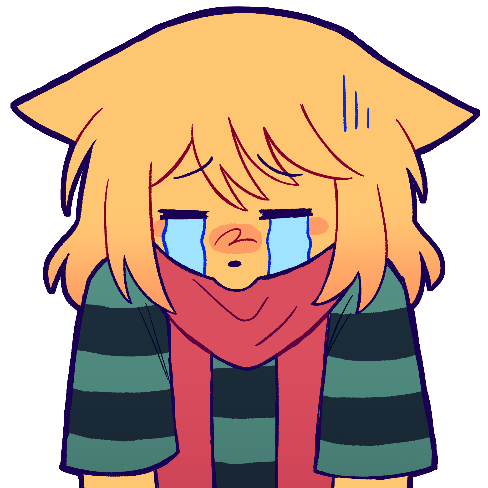

Bio
Hey! I'm amaice - also known to some as Amy - a real life catgirl based in NYC!
I spend most of my time thinking about music, and when I'm not doing that, it's usually either yuri, graphic design, some little tech project, or game dev (which really is a combination of all of the above).
ENG / ESP | Lesbian | Cat


Figure 1. meow
My Loves
Music
- Writing music
- My piano <3
- Jazz
- All genres too! I love Classical, Punk Rock, Pop, EDM, Samba, J-Rock, Hardstyle, and Barbershop Quartet just as much
Video Games
- Factorio
- Balatro
- Disco Elysium
- Celeste
- Hollow Knight
- Universal Paperclips
- Mahjong Soul
Anime
- Nichijou (My Ordinary Life)
- Dr. Stone
- Bocchi the Rock
- K-On
- Sound Euphonium
- Death Note
- Oshi No Ko (My Star)
Yuri
- Liz and the Blue Bird
- In Love With the Villainess
- Girls Last Tour
- Destroy It All And Love Me In Hell
- Adachi and Shimamura
- Kitanai Kimi ga Ichiban Kawaii (I Love You When You're Filthy)
- The Summer You Were There